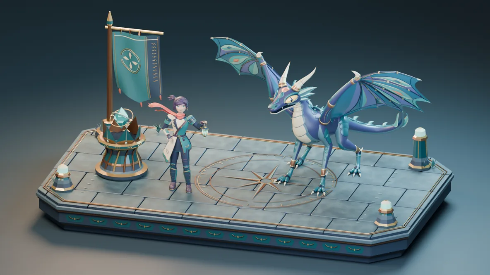

The First Signal
High tide is eight rounds away. Help Iria and her drake read three survey marks, then raise her lantern beside the Tide Lock.
Survey board

Select an ally, then tap an outlined square to move. On a keyboard, use the arrow keys and Enter.
Your party
Survey marks
Either ally can read a mark from its square or the one directly beside it.
Select Iria or her drake to give an order.
How to play
Each ally gets two action points per round. One move takes Iria up to two orthogonal squares or the drake up to three. Reading a mark, warding, or raising the lantern costs one point.
Squares marked ≈ flood after you end the round. An unprotected ally there loses one health. The drake’s ward protects the cross of squares around it for that round. Keep Iria on her feet and signal beside A3 before the eighth round ends.
Mouse or touch: use the 3D court or coordinate board to select and move. Keyboard: use 1 and 2 to select an ally, then Tab to the map, use the arrows, and press Enter. All orders also have buttons.